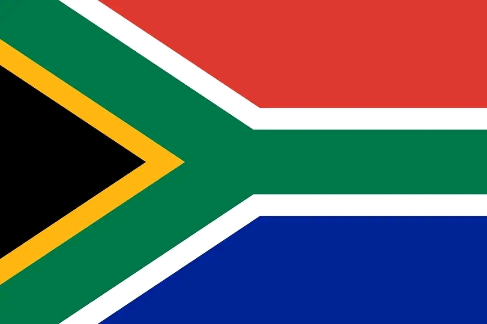

Teckler N Makomeke
About Me
l am one of South African student currently residing in Pretoria , studying Web Development. As l thrive to learn more about HTML, CSS and Javascript so that l can have a knowledge of building my own strong responsive Web design and create websites that functions well. l am passionate about technology how it can be used to solve real-world problems.
Pretoria, South Africa

South Africa is a beautiful rich in culture, history and natural resources country located at the bottom of Africa. lt is known for its diverse as people call it the Rainbow Nation because of its different culture and group of people. South Africa have 11 official languages which makes it the most diverse country in the world.